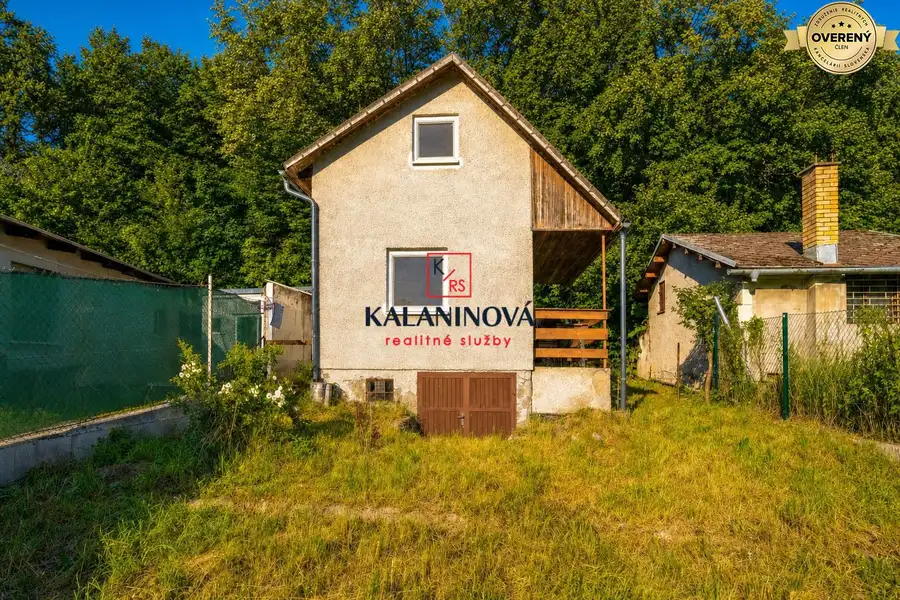
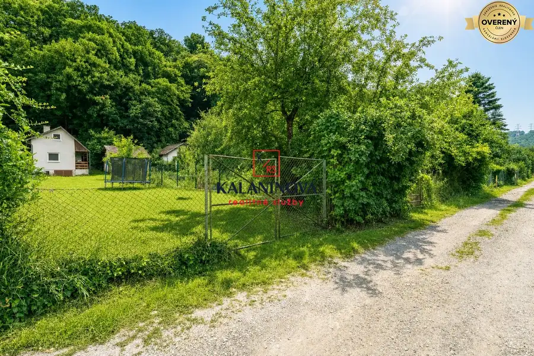
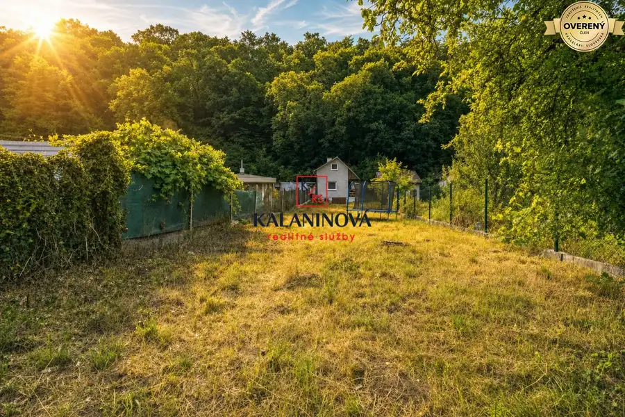
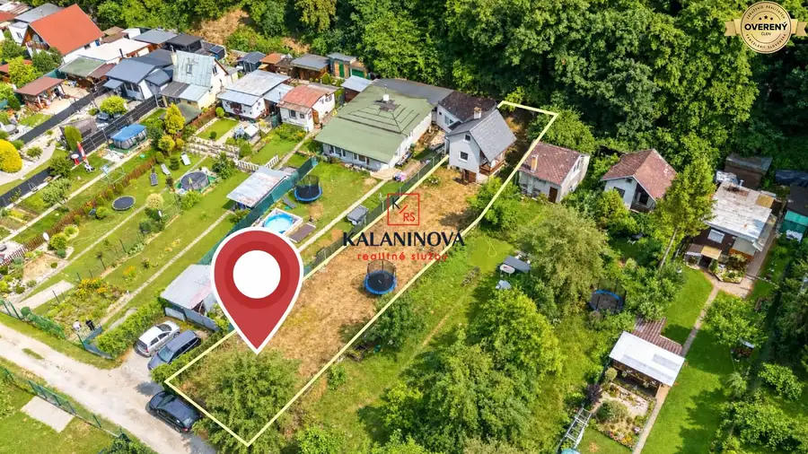
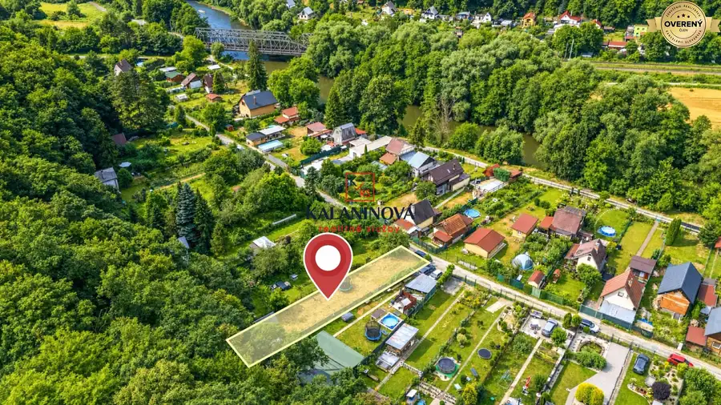
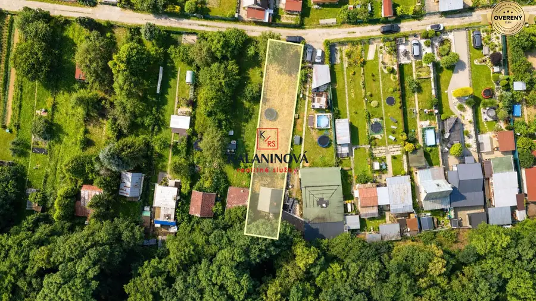
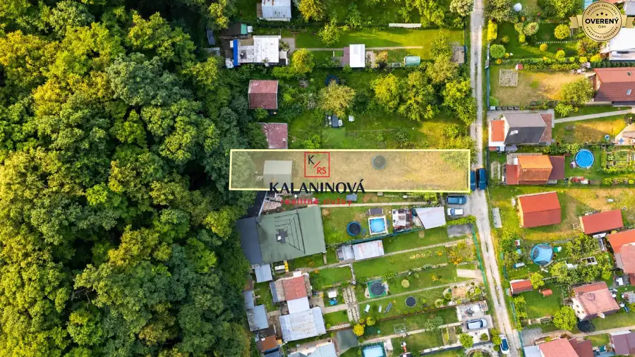

Na predaj chata pri lese, Kostoľany nad Hornádom, Košice-okolie
Okolie








- Dispozícia2-izbový
- Plocha35 m²
- Poschodie0. z 3
- Stavčiastočne prerobený
- Vlastníctvoosobné
O nehnuteľnosti
Hľadáte únik z mesta v blízkosti Košíc, miesto na oddych a relax po náročnom pracovnom týždni alebo priestor, kde si vaše deti užijú prázdniny v prírode? Potom je táto ponuka ideálna práve pre Vás.
Exkluzívne Vám ponúkame na predaj chatu pri lese s pozemkom a podielom na prístupovej ceste, v rekreačnej oblasti Pod Rohom v obci Kostoľany nad Hornádom, okres Košice – okolie. Blízkosť rieky Hornád a lesa zaručuje dokonalú atmosféru pre relax.
Kostoľany nad Hornádom patria medzi vyhľadávané lokality len pár minút od Košíc, hlavne pre obyvateľov Sídliska Ťahanoviec. Obec ponúka pokojné bývanie a oddych v krásnom prírodnom prostredí údolia rieky Hornád pod pohorím Čierna hora. Lokalita je obľúbená pre výbornú dostupnosť do Košíc – len 4 km za Ťahanovským tunelom. Od centra Košíc je obec vzdialená približne 9 – 10 km (cca 10 minút autom), od susednej obce Družstevná pri Hornáde len približne 2 km.
Chata je postavená na rovinatom, slnečnom pozemku, v krásnom prostredí a pozostáva z troch podlaží (1.PP – sklad, 1.NP – izba kuchynská časť s obývačkou, podkrovie).
Svojím charakterom ponúka príjemnú kombináciu rekreačného bývania a kontaktu s prírodou. V susedstve sa už viaceré chaty využívajú na celoročné bývanie, preto nehnuteľnosť ponúka potenciál pre budúceho majiteľa aj na úpravu chaty na celoročné užívanie.
Nehnuteľnosť je v osobnom vlastníctve, má pridelené súpisné číslo, vlastný oplotený pozemok a podiel na prístupovej ceste. K chate vedie spevnená prístupová cesta, ktorá je pravidelne udržiavaná. Parkovanie je možné priamo na pozemku alebo pred chatou.
Základné informácie:
• zastavaná plocha: 22 m² ,
• úžitková plocha: 35 m2
• pozemok: 429 m² (rovinatý a slnečný, kompletne oplotený)
Inžinierske siete:
• elektrina – 360V
• predpríprava prívodu vody a odpadu do chaty s vývodmi v chate a odpadom v chate (predpríprava)
• studňa
• murované suché WC
Chata je murovaná, s udržiavanou brizolitovou fasádou v kombinácii s drevenými prvkami, ktoré dotvárajú jej príjemný rekreačný charakter.
Nehnuteľnosť začal majiteľ postupne rekonštruovať, a to v rustikálnom štýle.
Veď pozrite si aktuálny stav a navrhovaný stav medzi fotkami, vrátane pôdorysov podlaží.
Rekonštrukcia a vybavenie:
• nová sedlová strecha s presahom nad terasou, v imitácii škridle,
• nové rozvody elektriny vrátane ističov a vonkajšej rozvodnej skrine,
• predpríprava prívody vody a odpadu,
• plastové okná a dvere, sieťky na oknách,
• nová dlažba na prízemí,
• nové stierky a maľby v celej chate,
• drevené schody a priznané drevené prvky (trámy),
• nová krbová piecka (ešte nepoužitá)
Dispozičné riešenie
1. podzemné podlažie:
• technické a skladové priestory s prístupom priamo zo záhrady, vhodný na uskladnenie náradia, dreva či športového vybavenia
1. nadzemné podlažie:
• krytá terasa s posedením a grilom, ktorá poskytuje príjemné posedenie s výhľadom na zeleň,
• denná časť pozostávajúca z kuchynskej časti a obývacieho priestoru, kde dominantou je rustikálna (španielska) dlažba v prírodných tónoch v kombinácii s dekoratívnym patchworkovým vzorom. To celé dodáva interiéru útulný vidiecky charakter, komín obložený dekoratívnym tehlovým obkladom
Podkrovie:
• drevené schody a zábradlie,
• nočná časť vhodná na spanie alebo oddych pre cca 4 osoby,
• drevené podlahy (tzv. dile) a priznaný drevený obklad vytvárajú príjemnú chatovú atmosféru
Okrem hlavnej chaty sa na pozemku nachádza:
- murované WC ( suché) s plastovými dverami
- vínna pivnica vsadená v zemi
Súčasťou predaja zostáva aj vybavenie, ktoré si pripravil majiteľ na dokončenie chaty a ktoré zostáva budúcemu majiteľovi v rámci kúpnej ceny:
• nové obklady, dlažby a mozaiky ešte v balení,
• štýlová rustikálna kuchynská časť s masívnou komodou a doplnkami
• krbová piecka, ktorá ešte nebola používaná,
• svetlá,
• trampolína (4 m),
• krovinorez,
• záhradné náradie,
• masívny záhradný stôl a lavice
Teraz čaká na niekoho, kto ocení možnosť dokončiť si chatu podľa vlastného vkusu a kto hľadá pre svoju rodinu pokojné miesto na relax pri lese a v blízkosti Košíc.
Energetický certifikát nie je k dispozícii. Nehnuteľnosť je bez tiarch a kúpou voľná. DOHODA na cene možná.
Pre viac fotiek navštívte našu webovú stránku: kalaninovareality.sk
Veľkým benefitom tejto lokality je aj vznikajúca cyklotrasa v blízkom okolí chaty, ktorá bude súčasťou medzinárodnej siete EuroVelo – jednej z najkvalitnejších cyklotrás v Európe. Cyklotrasa povedie popri rieke Hornád z Družstevnej pri Hornáde – časť Tepličany smerom ku Košiciam a Sídlisku Ťahanovce. Ide o významné cyklistické prepojenie, ktoré vytvorí bezpečný prejazd smerom na Prešov, Ružín či do priľahlých lesov nad obcou Sokoľ.
Samotná obec ponúka základnú občiansku vybavenosť – materskú a základnú školu, potraviny, pohostinstvo, obecný úrad, kostol, vlakové a autobusové spojenie s výbornou dostupnosťou do Košíc. Výhodou lokality je aj blízkosť lesa, rieky Hornád, turistických trás a množstvo možností na šport a aktívny oddych.
Využite príležitosť získať nehnuteľnosť v osobnom vlastníctve vrátane pozemku a podielu na prístupovej ceste v lokalite, ktorej hodnota bude vďaka novej cyklotrase ešte rásť. Leto je už tu – doprajte si miesto na oddych v prírode len pár minút od mesta.
Obhliadku si môžete dohodnúť na tel. č.: – Vaša realitná maklérka Ing. Renáta Kalaninová, RSc.
Predávate nehnuteľnosť? Využite moje služby. Som certifikovaná realitná maklérka s dlhoročnou bankovou a realitnou praxou a veľmi rada Vám pomôžem s celým procesom predaja nehnuteľnosti.
Parametre
- Rozloha pozemku
- 429 m²
- Zastavaná plocha
- 22 m²
- Celková rozloha
- 35 m²
- Úžitková plocha
- 35 m²
- Poschodie
- prízemie
- Počet poschodí
- 3
- Počet izieb
- 2
- Vlastníctvo
- osobné
- Stav
- čiastočne prerobený
- Status
- aktívne
- Voda
- studňa
- El. napätie
- 230V
- Plyn
- nie
- Kanalizácia
- žumpa
- Vykurovanie
- vlastné - pevné palivo
- Pivnica
- áno
- Parkovanie
- vlastné vyhradené
- Inžinierske siete
- áno
- Postavené z
- tehla
- Zariadenie
- nezariadený
- Zateplený objekt
- nie
- Strecha
- po rekonštrukcii
- Energetický certifikát
- nie
- Terén
- rovina
- Prístupová cesta
- asfaltová cesta
- Dátum zverejnenia
- 2026-07-29
Kde to je
Mohlo by Vás zaujímať
 Rodinné domyNové
419 900 €PREDAJ: zariadená novostavba rodinného domu, na začiatku Košice–Krásna
mestská časť Krásna, Košice
4-izbový91 m²
Rodinné domyNové
419 900 €PREDAJ: zariadená novostavba rodinného domu, na začiatku Košice–Krásna
mestská časť Krásna, Košice
4-izbový91 m²
 OstatnéNové
100,- €/mes.PRENÁJOM: vnútorné parkovacie státie, Košice-centrum, Strojárenská
mestská časť Staré Mesto, Košice
13 m²
OstatnéNové
100,- €/mes.PRENÁJOM: vnútorné parkovacie státie, Košice-centrum, Strojárenská
mestská časť Staré Mesto, Košice
13 m²
 PozemokNové
60,- €/mes.PRENÁJOM parkovacieho miesta, Košice – Staré Mesto, ul. Strojárenská
mestská časť Staré Mesto, Košice
11 m²
PozemokNové
60,- €/mes.PRENÁJOM parkovacieho miesta, Košice – Staré Mesto, ul. Strojárenská
mestská časť Staré Mesto, Košice
11 m²